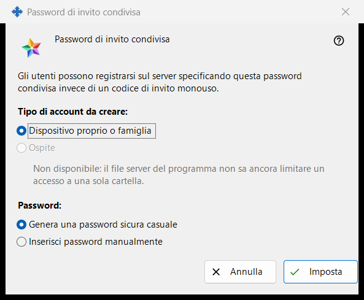
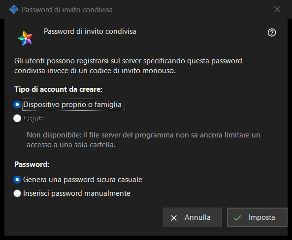

Password di invito condivisa
Scopo
Questa finestra permette agli utenti di registrarsi sul server con una password condivisa invece di un codice di invito monouso. Si apre selezionando «Password di invito condivisa» nel gruppo «Inviti» delle impostazioni del server di scambio, oppure con «Imposta password condivisa..» accanto.


In questo ordine
- Scegli il tipo di account.
- Scegli se la password viene generata dal programma o se la digiti tu.
- Premi «Imposta».
- Se la password è stata generata, copiala dalla finestra che la mostra una sola volta.
- Per smettere di accettarla, deseleziona «Password di invito condivisa» e conferma.
Gli elementi
Tipo di account
«Tipo di account da creare:» offre «Dispositivo proprio o famiglia» e «Ospite». «Ospite» è disattivato e la riga sotto ne indica il motivo: il file server del programma non può limitare un login a una sola cartella. Se una password condivisa è già attiva, il suo tipo attuale è preselezionato. Se quel tipo esistente è Ospite, «Imposta» è disattivato; la password condivisa può comunque essere disattivata.
Password
«Password:» offre «Genera una password sicura casuale» (selezionato per impostazione predefinita) e «Inserisci password manualmente». Dopo «Imposta», una password digitata viene richiesta in una finestra della password che verifica i criteri: almeno 10 caratteri con una lettera latina maiuscola, una lettera latina minuscola e una cifra. Annullando quella finestra torni qui.
Imposta
«Imposta» invia al server la password e il tipo di account e attiva la password condivisa; la pagina mostra «Password condivisa salvata e attivata.» e la riga di stato sotto la casella dice «Password condivisa attivata (tipo di account: ..).» Una password generata viene mostrata una sola volta in una finestra a parte: copiala lì, non si può leggere di nuovo. Chiunque conosca la password può registrare un account del tipo scelto, quindi passala solo alle persone che vuoi ammettere.
Disattivazione
Deselezionando la casella viene chiesto «Disattivare la password di invito condivisa? Le nuove registrazioni con essa non saranno più possibili.» La risposta predefinita è No. Dopo Sì la pagina mostra «Password condivisa disattivata.» e la riga di stato dice «Password condivisa disattivata.»
Annulla
«Annulla» o Esc chiude la finestra e non modifica nulla. Se l'hai aperta selezionando la casella, la casella torna allo stato precedente.
Impostazioni del gestore · Impostazioni condivisione SFTP · Impostazioni server di scambio